1004E10 engine, removed - remove cylinder head and oil sump for inspection - includes positioning on stand and removal
- Path
- Procedures > 10 ENGINE UNIT > 1004 ENGINE AND POWER UNIT > 1004E engine assembly inspection and repairs > 1004E10 engine, removed - remove cylinder head and oil sump for inspection - includes positioning on stand and removal
- Kind
- repair procedure (removal / refitting; the operation number is the code)
- Applies to
- all engines; all production periods
- Interactive page
- https://sloeber94.github.io/elrnDB-fPnd/en/#/2753367
Applies to: engines: 1.1; all production periods
1004D40 engine - position on stand and remove
Undo the drain plug on the crankcase sump and drain the engine oil that can be collected into a suitable container.
1. Undo the bolt (1a) and release the rpm sensor (1b) from its housing.
2. Work on the automatic tensioner (2a) and release the alternator/compressor drive belt (2b).
3. Undo the fixing bolts (3a) and remove the crankshaft pulley (3b).
Undo the fixing bolt and remove the alternator/compressor drive belt automatic tensioner.
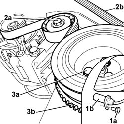
Applies to: engines: 1.2 8v; all production periods
1004D40 engine - position on stand and remove .
1. Disconnect electrical connections (1a), (1b), (1c), (1d), (1e), (1f), (1g), (1h), (1i) and (1l).
2. Open the wiring duct (2a) and remove the engine wiring (2b).
 | Name | Connector |
|---|---|---|
1a | Throttle position sensor | K56 |
| Name | Connector |
|---|---|---|
1b | Idle actuator | N74 |
| Name | Connector |
|---|---|---|
1c | Fuel vapour recovery solenoid | L10 |
| Name | Connector |
|---|---|---|
1d | Engine coolant temperature sensor/sender unit | K36 |
| Name | Connector |
|---|---|---|
1e | Injector | N70 |
| Name | Connector |
|---|---|---|
1f | Battery earth on engine | C2 |
| Name | Connector |
|---|---|---|
1g | Detonation sensor | K50 |
| Name | Connector |
|---|---|---|
1h | Engine oil pressure sensor | K28 |
| Name | Connector |
|---|---|---|
1i | Integrated air temperature sensor | K43 |
| Name | Connector |
|---|---|---|
1l | Rpm sensor | K46 |
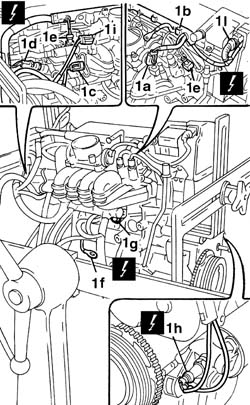
Applies to: engines: 1.3 JTD 16v; all production periods
Position the engine on the overhauling stand 1004D40 engine - position on stand and remove .
1. Disconnect the electrical connection from the engine coolant temperature sensor.
| Name | Connector |
|---|---|---|
1 | Engine coolant temperature sensor/sender unit | K36 |
2. Disconnect the electrical connection for the rpm sensor.
| Name | Connector |
|---|---|---|
2 | Rpm sensor | K46 |
3. Disconnect the electrical connection from the engine oil pressure warning light switch.
| Name | Connector |
|---|---|---|
3 | Engine oil pressure sensor | K28 |
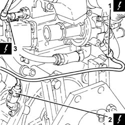
Applies to: engines: 1.1; all production periods
1. Withdraw the oil level dipstick.
2. Undo the bolt (2a) and remove the pipe mounting bracket (2b).
3. Release the electrical cable for the rpm and T.D.C. sensor from the fastenings on the timing blet protective covers.
4. Undo the bolts (4a) and remove the timing belt protective covers (4b).
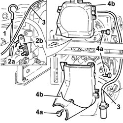
Applies to: engines: 1.2 8v; all production periods
1. Remove the inlet manifold complete with injectors and throttle body.
2. Remove bracket (2a) by undoing nuts (2b).
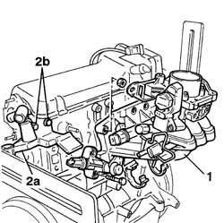
Applies to: engines: 1.3 JTD 16v; all production periods
1. Disconnect the electrical connections from the heater plugs.
| Name | Connector |
|---|---|---|
1 | Heater plugs | A40 |
2. Disconnect the electrical connections from the injectors.
| Name | Connector |
|---|---|---|
2 | Injector | N70 |
3. Disconnect the electrical connection from the cam angle sensor.
| Name | Connector |
|---|---|---|
3 | Timing sensor | K47 |
4. Disconnect the electrical connection from the air conditioning compressor engagement electromagnet.
| Name | Connector |
|---|---|---|
4 | Air conditioning compressor engagement solenoid | L20 |
5. Undo the bolts fixing the cable duct to the cylinder head.
6. Release the electrical wiring (6a) from the fastenings (6b) and move it sideways.
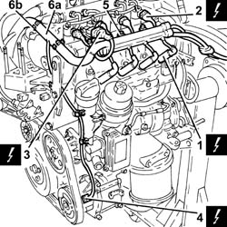
Applies to: engines: 1.1; all production periods
1. Loosen the mobile timing belt tensioner nut.
2. Remove the timing belt.
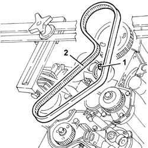
Applies to: engines: 1.2 8v; all production periods
1. Undo the bolt (1a) and remove the engine oil dipstick.
2. Remove the upper shield (2a) and the lower shield (2b) for the timing drive belt.
3. Release the rpm and TMS electrical lead from the fastenings on the timing belt covers and remove the rpm sensor.
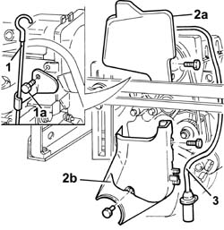
Applies to: engines: 1.3 JTD 16v; all production periods
1. Disconnect the electrical connection from the fuel pressure sensor.
| Name | Connector |
|---|---|---|
1 | Fuel pressure sensor | K83 |
2. Disconnect the electrical connection from the excess pressure sensor.
| Name | Connector |
|---|---|---|
2 | Turbocharging sensor | K82 |
3. Disconnect the electrical connection from the fuel pressure regulator.
| Name | Connector |
|---|---|---|
3 | Fuel pressure regulator | N77 |
4. Disconnect the electrical connection from the E.G.R. valve.
| Name | Connector |
|---|---|---|
4 | EGR solenoid | L30 |
5. Release the electrical wiring (5a) from the bands (5b) fastening it to the air chamber and remove it.
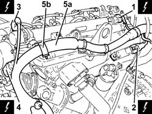
Applies to: engines: 1.1; all production periods
1. Undo the nuts (1a) and remove the exhaust manifold (1b).
Remove the exhaust manifold gasket.
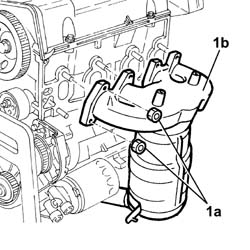
Applies to: engines: 1.2 8v; all production periods
1. Undo the bolts (1a) and remove the auxiliary shaft pulley on the crankshaft.
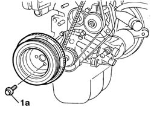
Applies to: engines: 1.3 JTD 16v; all production periods
Remove the protective plates located by the oil filter and the engine oil heat exchanger.
1. Undo the bolts securing the engine oil return pipe from the turbocharger, engine crankcase side.
2. Undo connector (1a) and remove engine oil supply pipe to the turbocharger (1b).
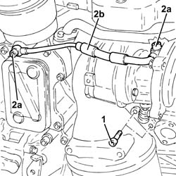
Applies to: engines: 1.1; all production periods
1. Undo the fixing bolts (1a) and remove the protective bracket (1b).
2. Undo the fixing nuts (2a) and remove the intake manifold (2b).
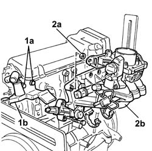
Applies to: engines: 1.2 8v; all production periods
1. Loosen the timing belt moving tensioner nut.
2. Remove the timing drive belt.
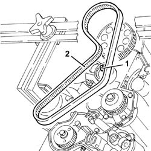
Applies to: engines: 1.3 JTD 16v; all production periods
1. Undo the bolts (1a) and the nut (1b) and remove the exhaust manifold heat shield (1c) complete with engine lifting bracket (1d).
2. Undo the bolt fixing the coolant supply pipe to the engine oil heat exchanger, to the cylinder block/crankcase.
3. Undo the bolts (3a), loosen the band (3b) and remove the coolant supply pipe to the engine oil heat exchanger (3c) complete with seal.
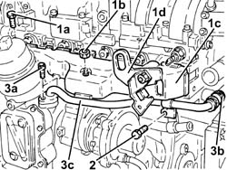
Applies to: engines: 1.1; all production periods
1. Disconnect the high tension leads from the spark plugs and release them from the fastening bands.
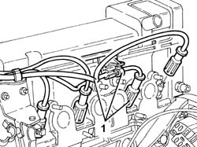
Applies to: engines: 1.2 8v; all production periods
1. Undo the bolts (1a) and remove cam cover (1b), complete with gasket.
2. Undo the bolts (2a) and remove the cylinder head (2b).
3. Remove the cylinder head gasket.
4. Remove both locating dowels.
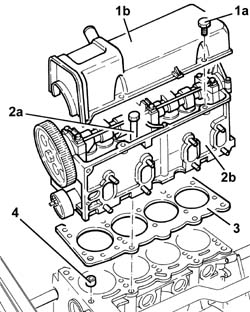
Applies to: engines: 1.3 JTD 16v; all production periods
1. Undo the nuts (1a) and remove the turbocharger (1b) complete with catalytic converter (1c).
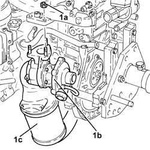
Applies to: engines: 1.1; all production periods
1. Undo the nuts (1a) and remove the support (1b) complete with ignition coils (1c) and high tension leads.
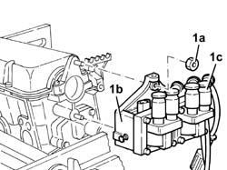
Applies to: engines: 1.2 8v; all production periods
Rotate the engine on the overhauling stand.
1. Undo nuts (1a) and bolts (1b) securing the oil sump to the crankcase.
2. Using the tool (2a), cut the silicone sealant along the entire perimeter of the oil sump.
 | Name | Country |
|---|---|---|
2a | Blade | 1.870.718.000 |
3. Remove the engine oil sump.
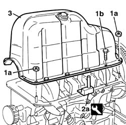
Applies to: engines: 1.3 JTD 16v; all production periods
1. Undo the bolts (1a) and remove the timing side rigid engine support (1b) complete with engine lifting bracket (1c).
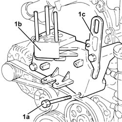
Applies to: engines: 1.1; all production periods
1. Undo the bolts (1a) and remove cam cover (1b), complete with seal.
2. Undo the bolts (2a) and remove the cylinder head (2b).
3. Remove the cylinder head gasket.
4. Remove both locating dowels.
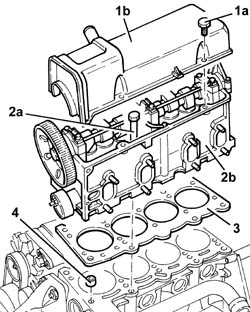
Applies to: engines: 1.3 JTD 16v; all production periods
1. Use a spanner on the moving tensioner (1a) and remove the engine components single drive belt (1b).
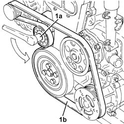
Applies to: engines: 1.1; all production periods
Rotate the engine on the overhauling stand.
1. Undo the nuts (1a) and the bolts (1b).
2. Using a special tool, cut the bead of sealant for the enigne oil sump, then remove it.
| Name | Country |
|---|---|---|
- | Blade | 1.870.718.000 |
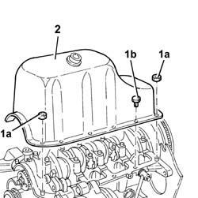
Applies to: engines: 1.3 JTD 16v; all production periods
1. Undo the bolt (1a) and remove the single drive belt tensioner (1b).
2. Completely undo the bolts (2a) loosened previously and remove the crankshaft pulley (2b).
3. Undo the nuts (3a) and remove the water pump (3b) complete with gasket.
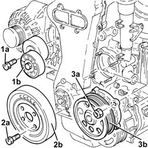
Applies to: engines: 1.3 JTD 16v; all production periods
1. Completely undo the left hand bolt (1a) loosened previously and remove the pulley mounting flange on the crankshaft (1b) 1004D40 engine - position on stand and remove .
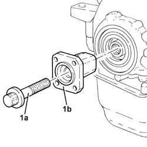
Applies to: engines: 1.3 JTD 16v; all production periods
Undo the bolts and remove the intermediate driveshaft support.
1. Undo the bolt (1a) and remove the complete engine oil dipstick tube (1b).
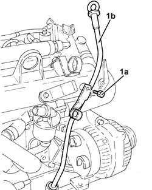
Applies to: engines: 1.3 JTD 16v; all production periods
Rotate the engine through 180° on the overhauling stand.
1. Undo the bolts (1a) and remove the support (1b).
2. Undo the nuts (2a) and the bolts (2b) fixing the crankcase sump.
3. Use the tool to cut the crankcase sump sealant.
| Name | Country |
|---|---|---|
3 | Blade | 1.870.718.000 |
4. Remove the crankcase sump.
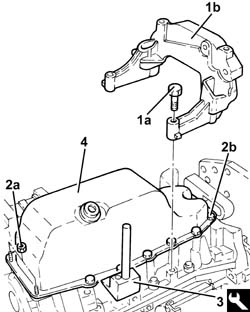
Applies to: engines: 1.3 JTD 16v; all production periods
1. Undo the bolts (1a) and remove the crankcase oil sump partition (1b).
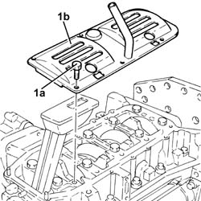
Applies to: engines: 1.3 JTD 16v; all production periods
Rotate the engine through 180° on the overhauling stand.
1. Undo the bolt (1a) and disconnect the connector (1b) for the engine oil vapour recovery pipe from the timing cover.
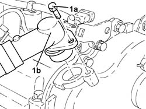
Applies to: engines: 1.3 JTD 16v; all production periods
1. Undo the bolts (1a) and remove the timing cover (1b) complete with engine oil suction device (1c) and engine oil pump.
Remove the timing cover gasket.
2. Recover the brackets.
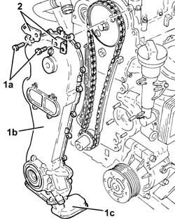
Applies to: engines: 1.3 JTD 16v; all production periods
1. Keep the tool fitted on the exhaust side camshaft. 1004D10 power unit (manual gearbox), removed, remove and re-build
| Name | Country |
|---|---|---|
1b | Template | 1.871.000.900 |
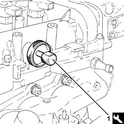
Applies to: engines: 1.3 JTD 16v; all production periods
1. Fit the crankshaft timing tool.
| Name | Country |
|---|---|---|
1b | Template | 1.870.900.300 |
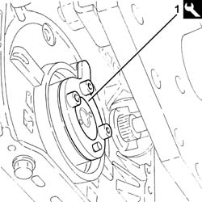
Applies to: engines: 1.3 JTD 16v; all production periods
1. Undo the bolt securing the driven timing pulley.
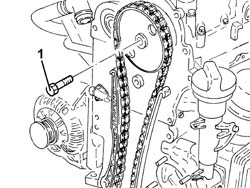
Applies to: engines: 1.3 JTD 16v; all production periods
1. Remove the timing driven driven pulley (1a) together with the chain (1b) and the toothed drive pulley (1c).
2. Undo the bolts (2a) and remove the timing chain fixed plate (2b).
3. Undo the pin (3a) and remove the timing chain moving plate (3b).
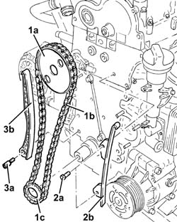
Applies to: engines: 1.3 JTD 16v; all production periods
1. Undo the bolts (1a) and remove the moving timing belt tensioner (1b).
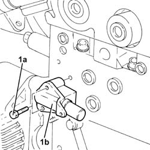
Applies to: engines: 1.3 JTD 16v; all production periods
1. Manually push the clips (1a) and disconnect the fuel outlet pipe from the injectors (1b).
2. Loosen the connectors (2a) and remove the pipe from the pressure pump to the fuel manifold (2b).
3. Undo the connectors (3a) and remove the pipes from the fuel manifold to the injectors (3b).
4. Loosen the band and disconnect the return pipe from the pressure pump to the fuel manifold, pressure pump side.
5. Undo the bolts (5a) and remove the mounting bracket (5b) complete with single fuel manifold pipe (5c), fuel pressure regulator (5d) and fuel pressure sensor (5e).
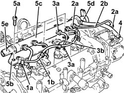
Applies to: engines: 1.3 JTD 16v; all production periods
1. Undo the injector mounting bracket nut.
2. Remove the washer (2a) and tapered washer (2b).
3. Fit the injectors (3a), one at a time, using tools (3b) and (3c).
| Name | Country |
|---|---|---|
3b | Extractor | 1.870.900.700 |
| Name | Country |
|---|---|---|
3c | Extractor | 1.870.739.000 |
Remove the fuel injectors complete with bracket.
Repeat the above procedure to remove the remaining pair of injectors.
4. Remove the injector dust seals from the camshaft housing.
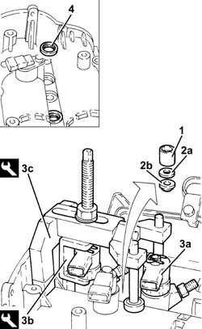
Applies to: engines: 1.3 JTD 16v; all production periods
1. Undo the bolts (1a) and (1b), then remove the camshaft housing assembly (1c).
2. Remove the gasket.
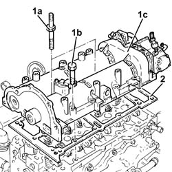
Applies to: engines: 1.3 JTD 16v; all production periods
1. Undo the bolts fixing the water/exhaust gas heat exchanger for the E.G.R. system.
2. Loosen the band and disconnect the condensed engine oil recovery pipe, oil vapour separator side.
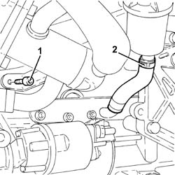
Applies to: engines: 1.3 JTD 16v; all production periods
1. Undo the bolts (1a) and remove the complete cylinder head (1b).
2. Remove the cylinder head gasket.
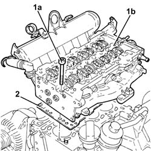
Topics linked from this page (2)
- 1004D10 power unit (manual gearbox), removed, remove and re-build
- 1004D40 engine - position on stand and remove